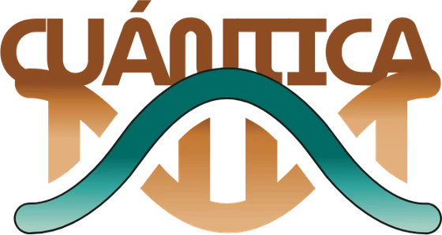
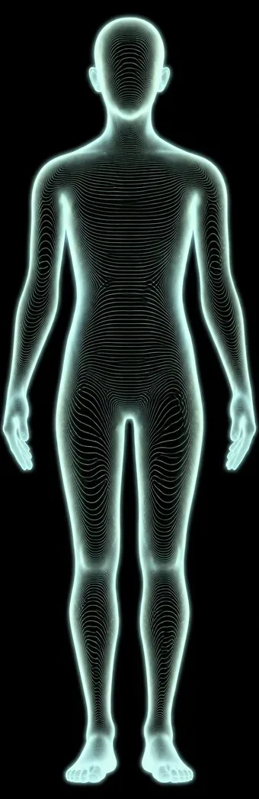

Hola
Acá está tu proceso, etapa por etapa.
Tu nombre queda guardado solo en tu celular.
Tu camino
Hoy te toca
Tus tomas de hoy
Las mismas de tu planilla. Lo que tildás queda solo en tu celular y mañana arranca de cero.
Tu próxima etapa
Cómo me vengo sintiendo
¿Cómo te venís sintiendo?
Lo que escribís me llega a mí y queda en tu libreta: lo tengo en cuenta en tu próxima etapa.
Lo que estamos trabajando
Tu proceso
Etapa por etapa
Lo que necesites
Tocá y se abre tu correo con el pedido escrito: solo tocá Enviar. Me llega a mí y te contesto.
Tus datos de envío
Hablemos
¿Te quedó una duda con tu etapa? Escribime y lo vemos.
Escribime por WhatsAppTu lectura
Tu cuerpo
Tocá una zona y te muestro qué la acompaña.

- En equilibrio
- Desequilibrio leve
- Con carga
- Carga fuerte
Punto gris: esa zona no tiene un nivel para mostrarte.
El anillo que late: lo que trabajamos en esta etapa.
El punto gris que titila: ahí también trabajamos en esta etapa, aunque no tenga un nivel para mostrarte.
Zona
La acompaña
En esta etapa no hay un remedio propio para esta zona: la acompaña el plan entero.
Lo que vi
Lo que se vio
Tu estudio
Lo que leímos en tu estudio, zona por zona.
Lo que me contaste
Lo que vimos, zona por zona
Cuando tengas tu informe, acá vas a ver lo que leímos, zona por zona.
Lo que tomás
Tus remedios
Los de las etapas que ya recibiste, zona por zona.
Tus remedios aparecen acá cuando recibís tu etapa.
Tu mezcla del gotero
Tus flores aparecen acá cuando tu papel las trae.
Sumá
Por ahora, pausá
El detalle, con tus reemplazos y tu día, está en tu plan de comidas.
Cuando tengas tu plan de comidas, acá vas a ver qué sumar y qué pausar.
Hablemos
Acá estoy
Elegí por dónde, según lo que necesites.
No tratamos el síntoma · Ajustamos la frecuencia que lo CAUSA